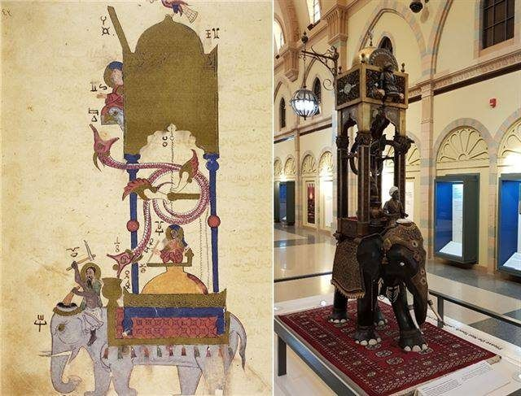
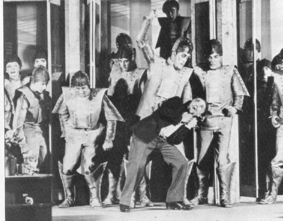
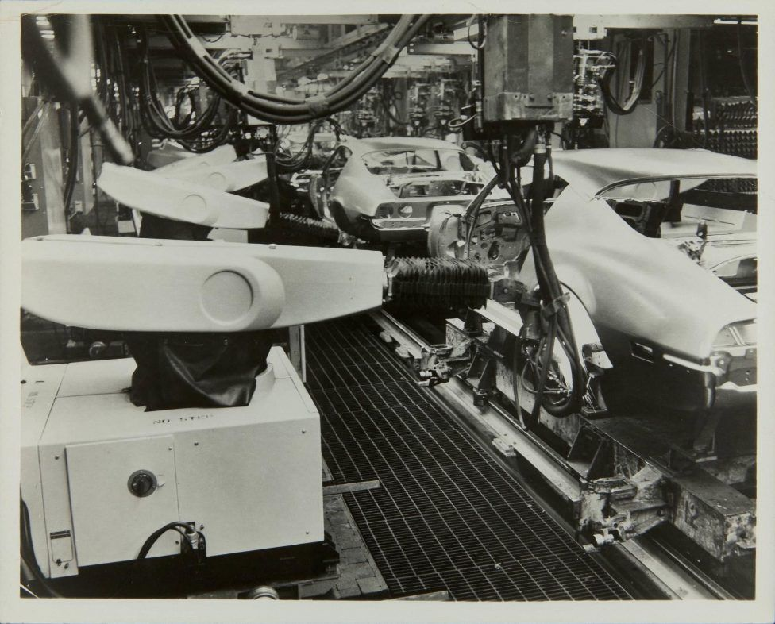
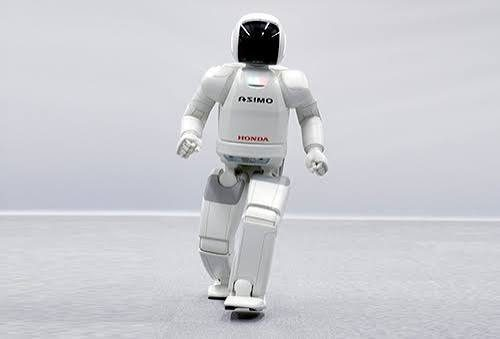
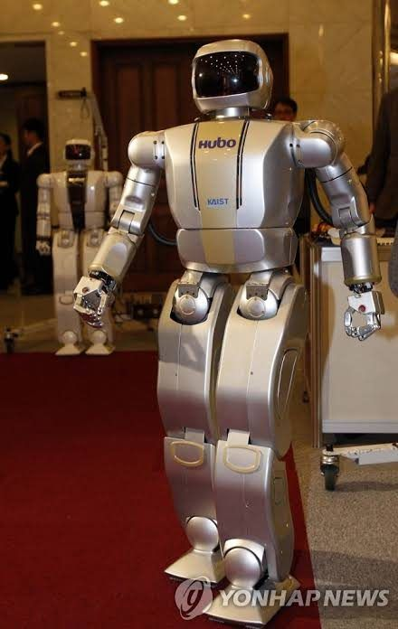
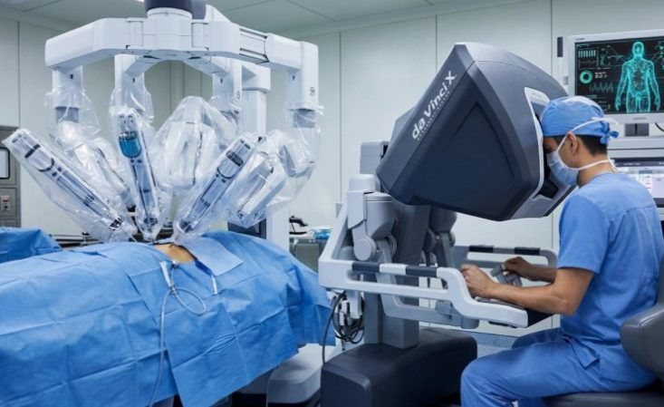
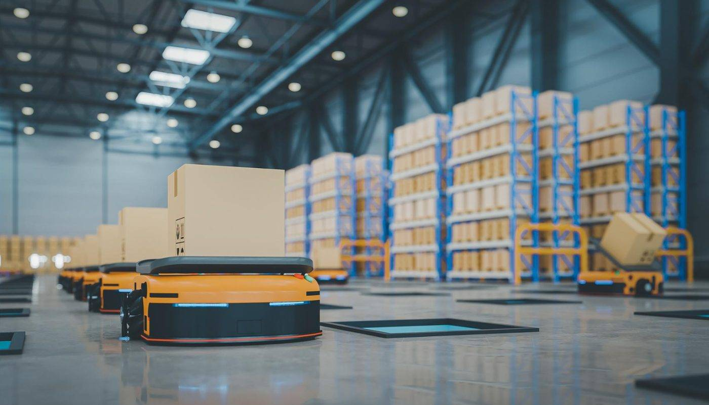
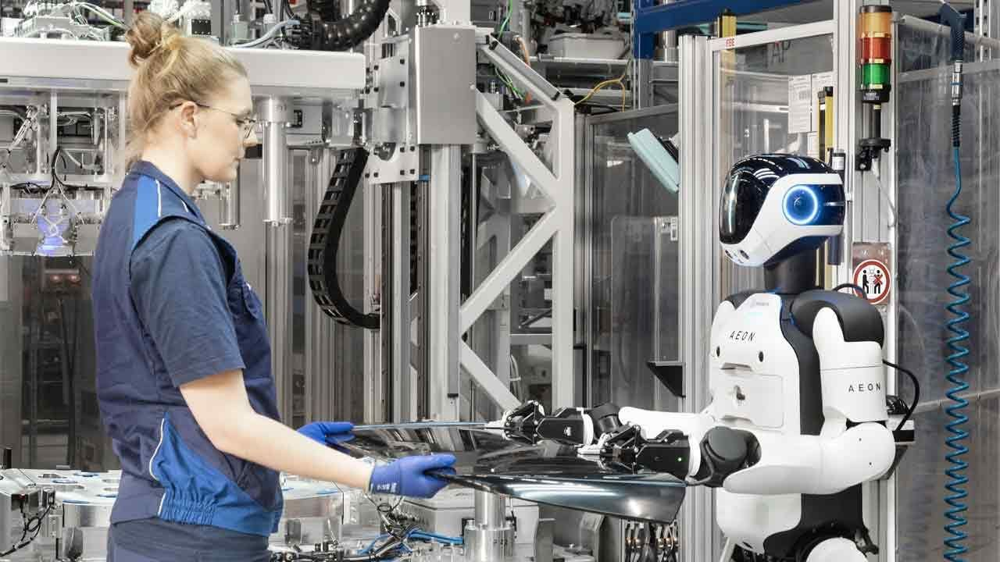

오토마타, 로봇의 먼 조상
전기도 컴퓨터도 없던 시대, 사람들은 물·공기·증기·톱니바퀴·캠으로 스스로 움직이는 자동인형(오토마타)을 만들었다. 지능은 없었지만 ‘동작 순서를 저장해 재생한다’는 생각은 이미 있었다.
- 신화 속 존재 — 크레타를 지키는 청동 거인 탈로스, 헤파이스토스의 황금 하녀. 실존한 기계는 아니다.
- 아르키타스(기원전 4세기) — 공기의 힘으로 날았다고 전해지는 나무 비둘기
- 크테시비오스·헤론 — 물시계 인형(기원전 3세기), 증기로 열리는 신전 문·동전 성수기·자동 극장(1세기)
- 중국 — 『열자』 속 언사의 걷고 노래하는 인형, 3세기 마균의 지남거(톱니바퀴로 방향 보정)
- 알자자리(1136–1206) — 1206년 책에 장치 50여 가지를 남김. 못 박힌 원통으로 연주 순서를 바꾸는 악단 배는 프로그램 가능 기계의 원형
- 안티키테라 기계·자격루 — 톱니바퀴로 천문을 계산한 기원전 2~1세기 장치, 시각이 되면 인형이 종을 치는 장영실의 자격루

‘로봇’이라는 단어의 탄생
‘로봇’은 19세기가 아니라 20세기에 생긴 말이다. 체코의 극작가 카렐 차페크가 희곡 《R.U.R.(로숨의 유니버설 로봇)》에서 처음 썼다. 1920년에 발표되고 이듬해 프라하에서 초연되며 널리 퍼졌다.
- 어원 — 체코어 ‘로보타(robota)’, 강제 노동·고된 일
- 원래 맥락 — 봉건제 아래 농민이 지주에게 바치던 의무 노동
- 작명 — 단어를 처음 떠올린 사람은 카렐의 형 요제프 차페크라고 전해진다
- 정의의 확립 — “인간을 대신해 노동을 수행하는 인조 존재”라는 개념이 이때 언어로 자리 잡음

최초의 산업용 로봇, 유니메이트
발명가 조지 데볼이 1954년 ‘프로그램된 물체 이송 장치’ 특허를 출원(1961년 등록)했고, 사업가 조셉 엥겔버거가 합류해 세계 최초의 로봇 기업 ‘유니메이션’을 세웠다. 1961년 그 결과물 ‘유니메이트’가 미국 뉴저지의 GM 공장에 투입됐다.
- 맡은 일 — 다이캐스팅에서 나온 뜨거운 금속 부품을 꺼내 냉각수에 담그는 위험 작업, 차체 스폿 용접
- 규격 — 약 1.8톤(4,000파운드), 5자유도 유압식 로봇 팔
- 두뇌 — 자기 드럼 메모리에 동작 순서를 저장. 초기 제어 회로는 진공관, 이후 트랜지스터로 발전
- 성과 — 24시간 일정한 정확도로 작업해 생산성을 높이고 작업자의 사고 위험을 줄임
- 가격 — 1970년대 초 대당 약 3만 5천 달러
- 기록 — 2003년 ‘로봇 명예의 전당’ 첫 등재, 엥겔버거는 ‘로봇공학의 아버지’

지능형 로봇과 휴머노이드의 등장
넘어지지 않고 걷게 해주는 ZMP(제로 모멘트 포인트) 균형 제어가 완성되면서, 공장용 팔 중심이던 로봇이 사람을 닮은 ‘휴머노이드’로 넓어졌다. 공장을 벗어나 가정과 일상 공간에서 사람과 교감하는 로봇 연구도 활발해졌다.
- 혼다 ASIMO(2000) — 11월 20일 공식 발표. 키 120cm·43kg, 이족보행·계단·음성과 얼굴 인식. 2005년 달리기·제스처 해석이 추가됐고 2018년 개발 중단, 2022년 은퇴
- KAIST 휴보(2004) — 한국 최초의 인간형 로봇, 손가락 5개 독립 제어와 악수 힘 조절
- 소니 QRIO(2003~2006) — 세계 최초로 ‘뛰는’ 휴머노이드, 춤과 공연, 넘어지면 스스로 일어남
- NAO(2008, 알데바란) — 카메라·마이크를 갖춘 교육·연구용 플랫폼으로 널리 보급
- 안드로이드 — 실리콘 피부와 인공 근육으로 표정을 흉내 내는 한국의 에버원, 일본의 액트로이드


생활 곳곳에 자리 잡은 로봇
오늘날의 로봇은 사람을 완전히 대체하기보다, 번거롭거나 위험한 일을 보조하며 삶 속 깊숙이 스며들고 있다.
- 가정 — 라이다·카메라로 공간을 지도로 그리는 로봇청소기, 자동 먼지비움과 물걸레 세척
- 서비스업 — 매장 서빙 로봇, 호텔·실외 라스트마일 배달 로봇
- 의료 — 손 떨림 없는 수술 보조 로봇(다빈치), 보행을 돕는 웨어러블 재활 로봇
- 물류 — 창고를 누비는 자율이동로봇(AMR)과 무인운반차(AGV)


피지컬 AI 시대의 로봇
정해진 동작을 반복하던 기계에서, AI와 고성능 센서로 스스로 판단하고 현실 세계와 물리적으로 상호작용하는 ‘피지컬 AI’ 로봇으로의 전환이 예상된다. 흐름은 ‘명령 → 행동’에서 ‘상황 이해 → 판단 → 행동’으로 바뀐다.
- 휴머노이드 — 관절 각도를 일일이 코딩하는 대신 종단간(End-to-End) 학습으로 사람의 작업 영상을 보고 동작을 익힘. 촉각 센서로 계란과 쇠 공구를 손끝으로 구분
- 가정용 헬퍼 — 청소를 넘어 정리·빨래 개기·식기세척기 정리까지. 한 로봇이 익힌 경험을 다른 로봇이 함께 학습
- 의료·돌봄 — 미세 혈관 수술을 보조하는 정밀 로봇, 근육 반응을 읽어 힘을 보태는 외골격 재활 로봇
- 군집 로봇 — 개미·벌처럼 소형 로봇 수십~수백 대가 재난 구조, 우주·해저 탐사, 스마트팜 수확을 나눠 맡음
- 협동로봇(cobot) — 사람의 움직임을 감지하고 속도를 조절하며 같은 공간에서 안전하게 일함
- 정교해지는 감각 — 카메라, 라이다, 촉각·소리·온도 센서를 함께 써서 “컵을 세게 잡으면 깨진다”까지 고려
